Space is the Place
Eventos especiales de jazz y charlas espaciales.
Space is the Place es una serie de eventos enfocada en difundir el conocimiento científico sobre las maravillas del universo, no con grandes palabras ni ecuaciones, sino al ritmo del jazz.
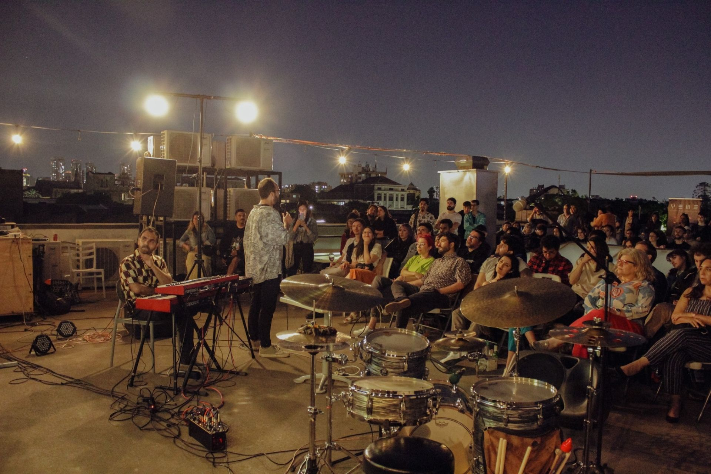
¿Te interesa la astronomía?
¿Te fascina la astronomía, te gusta salir y escuchar música? Pues tenemos justo lo que necesitas: Space is the Place combina divulgación científica, conversación cercana y escenarios culturales.
El proyecto comenzó en 2023 con nueve eventos en Thelonious, lugar de Jazz, luego continuó en la Casona Compañía, participó en el festival WOMAD y siguió con nuevas temporadas en el Teatro Comunitario Novedades.
El idioma de los eventos es el español.
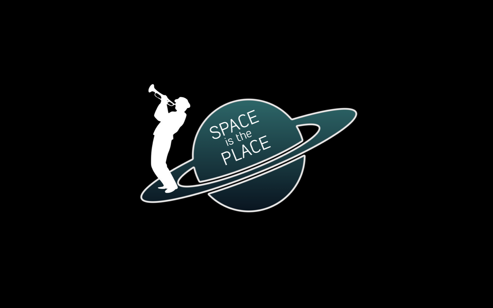
Eventos pasados
Selección de charlas y presentaciones realizadas en Santiago, Concepción y otros espacios culturales.
20 de Marzo 2026, 19:00 hrs: Dr. Philipp Weber, Planetario USACH, Santiago.
29 de Abril 2025, 19:00 hrs: Dr. James Miley, Planetario, Huechuraba.
14 de Marzo 2025, 19:00 hrs: Dra. Maria Jose Rain Sepulveda, Teatro Comunitario Novedades, Yungay.
12 de Marzo 2025, 21:00 hrs: Dr. Philipp Weber, Casa de Salud, Concepción.
09 de Mayo 2024, 19:00 hrs: Dra. Irma Fuentes Morales, Teatro Comunitario Novedades, Yungay.
18 de Abril 2024, 19:00 hrs: Dra. Carolina Agurto Gangas, Teatro Comunitario Novedades, Yungay.
04 de Abril 2024, 19:00 hrs: Dr. Jose Gallardo Navarro, Teatro Comunitario Novedades, Yungay.
22 de Marzo 2024, 21:00 hrs: Dr. Sebastián Pérez, WOMAD festival, Escenario del Cerro, Recoleta.
12 de Enero 2024: Dra. Yara Jaffé, Casona Compañía, Yungay.
29 de Noviembre 2023: Dr. Sebastian Marino, Casona Compañía, Yungay.
01 de Diciembre 2023: Dra. Elizabeth Artur de la Villamoirs, Casona Compañía, Yungay.
24 de Noviembre 2023: Dr. Sebastián Pérez, Casona Compañía, Yungay.
30 de Mayo 2023: Dr. Mario Hamuy, Thelonious, lugar de Jazz, Bella Vista.
23 de Mayo 2023: Dra. Alice Zurlo, Thelonious, lugar de Jazz, Bella Vista.
16 de Mayo 2023: Dr. Camilo González, Thelonious, lugar de Jazz, Bella Vista.
09 de Mayo 2023: Dr. Cristóbal Espinoza, Thelonious, lugar de Jazz, Bella Vista.
02 de Mayo 2023: Dr. Philipp Weber, Thelonious, lugar de Jazz, Bella Vista.
25 de Abril 2023: Dr. Alvaro Rojas, Thelonious, lugar de Jazz, Bella Vista.
18 de Abril 2023: Dra. Jenny Blamey, Thelonious, lugar de Jazz, Bella Vista.
11 de Abril 2023: Dra. Carla Arce-Tord, Thelonious, lugar de Jazz, Bella Vista.
04 de Abril 2023: Dr. Sebastián Pérez, Thelonious, lugar de Jazz, Bella Vista.
Imágenes de eventos
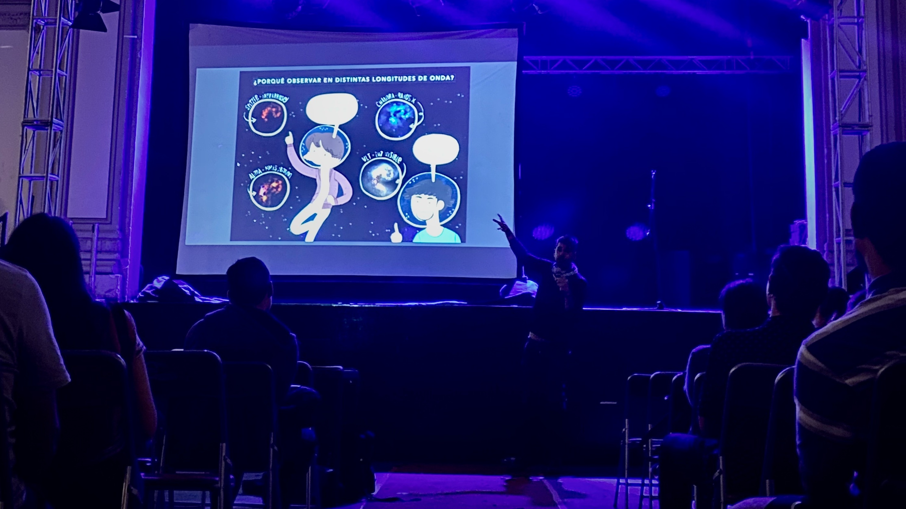
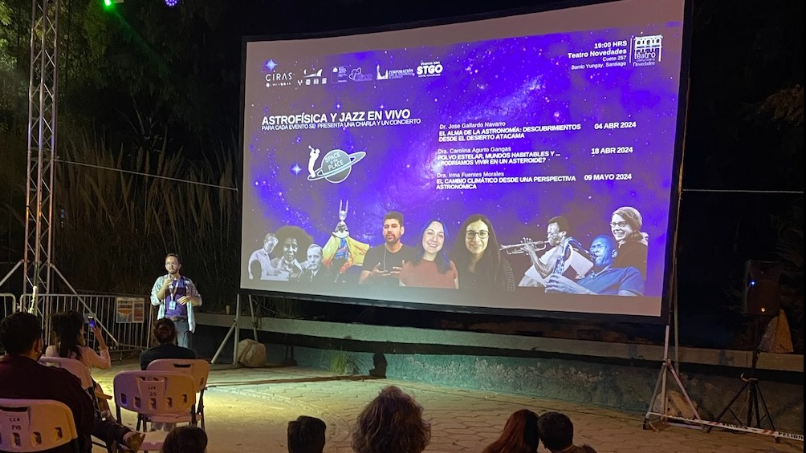
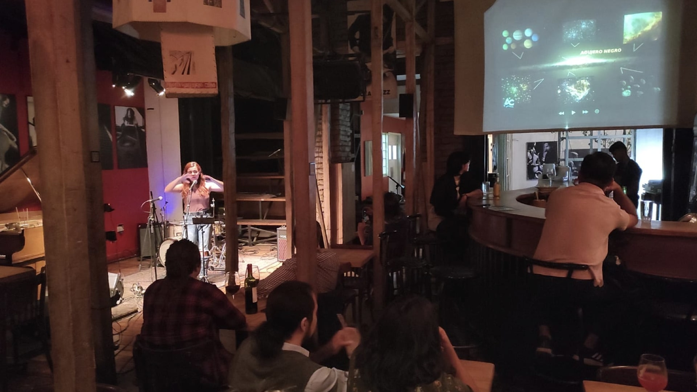
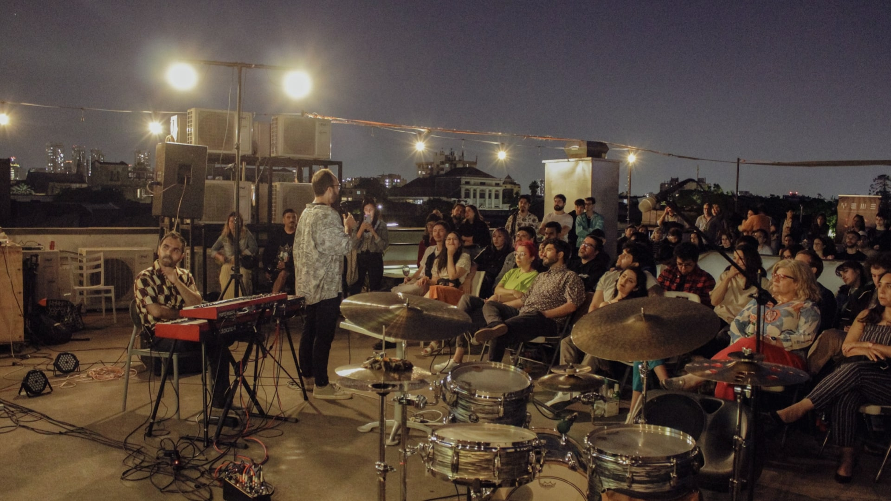
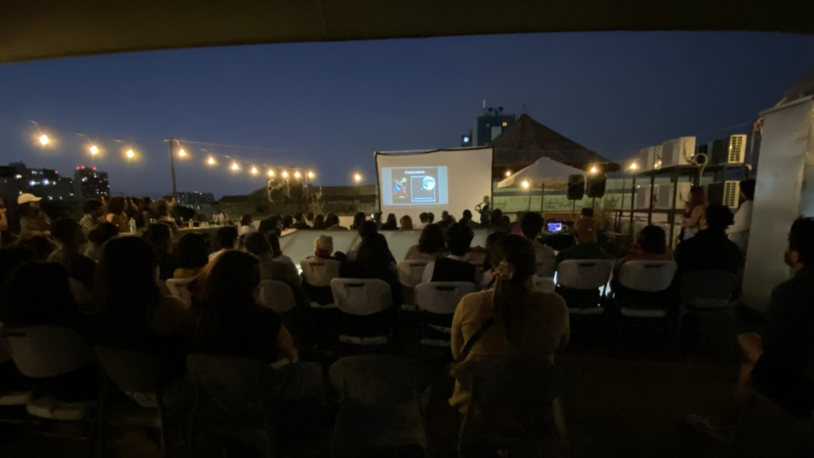
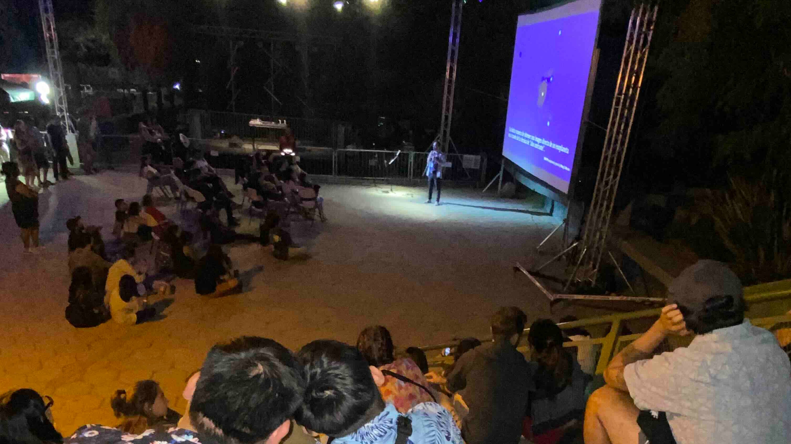
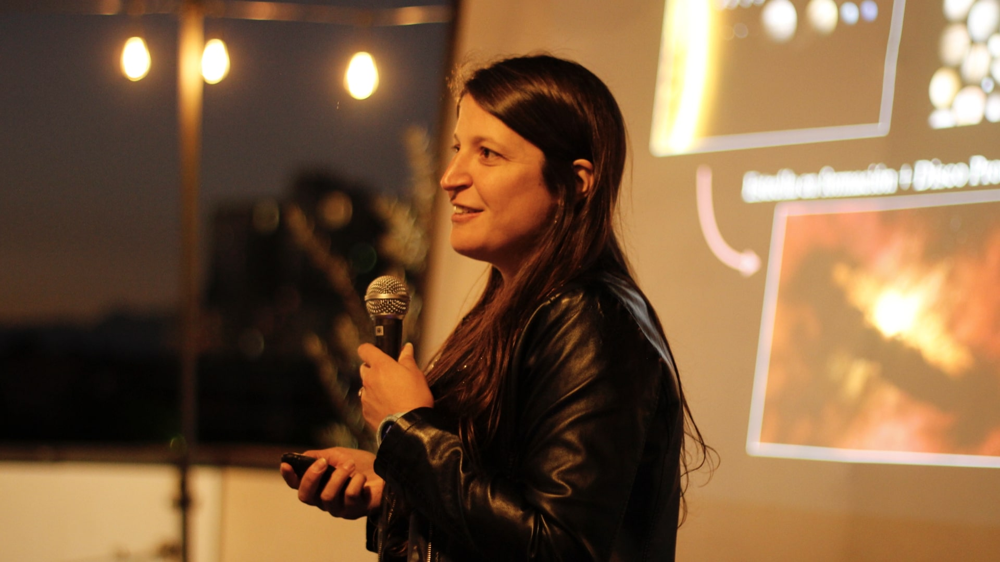
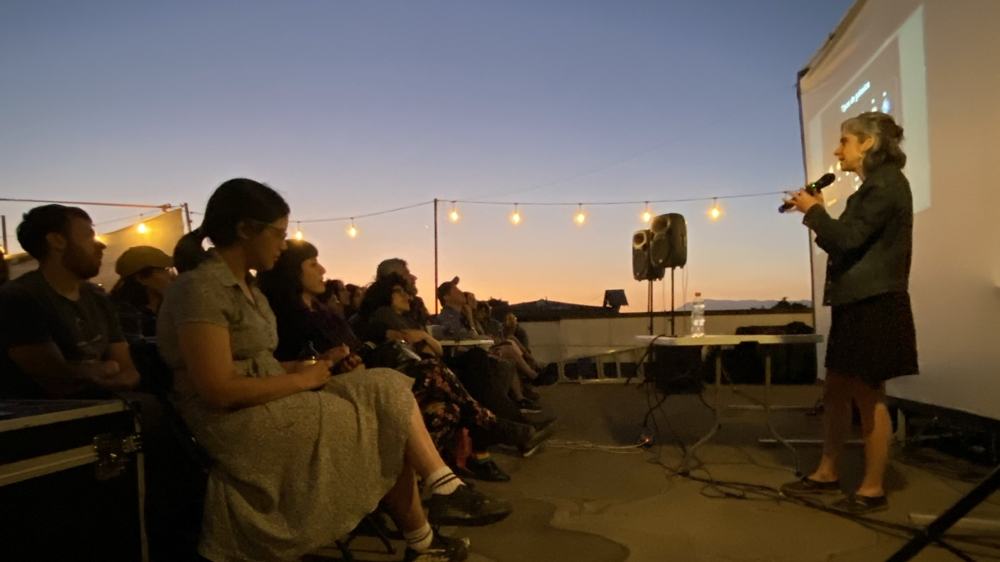
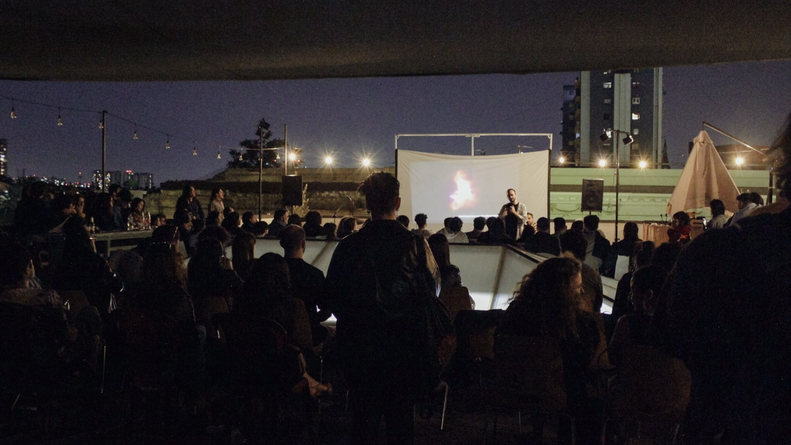
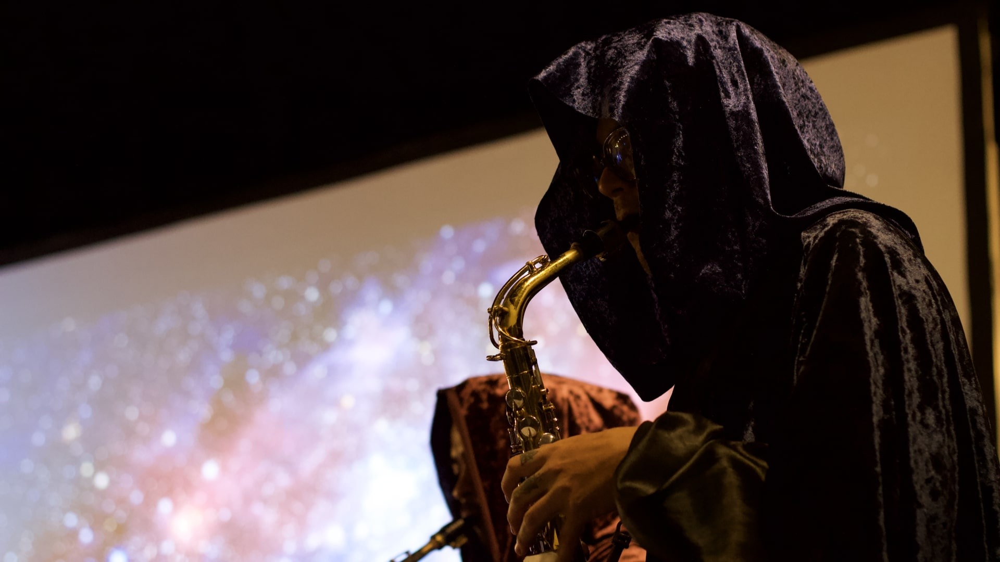
Apoyos y organización
Space is the Place es creado y organizado por el Núcleo Milenio Young Exoplanets and their Moons (YEMS). YEMS es un centro multiinstitucional entre la Universidad de Santiago de Chile, Universidad Diego Portales, Universidad de Chile y Universidad de Concepción.
YEMS es financiado por el programa ANID—Millennium Science Initiative, código de centro NCN2021_080.
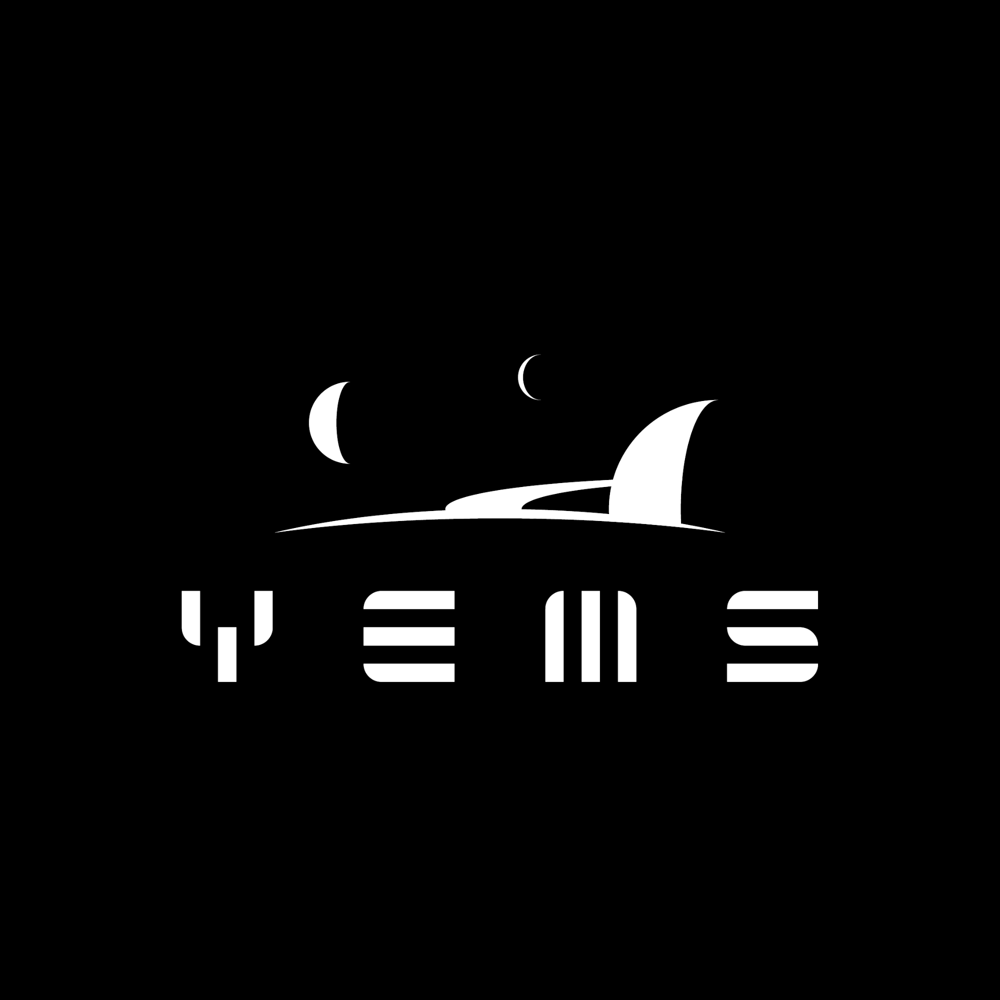
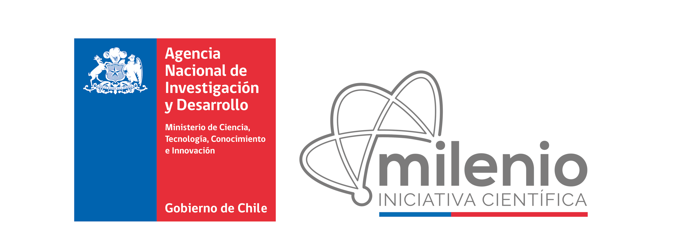